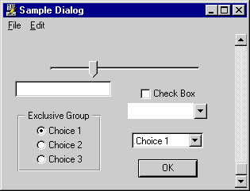
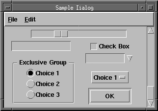
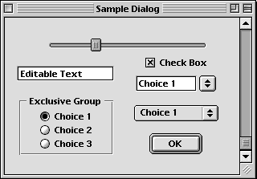

Look-and-Feel
The Look-and-Feel class provides a collection of parameters that determine the appearance and behavior of user interface objects. The Look-and-Feel class exports the characteristics of the current look-and-feel through a set of interface functions which you can call to determine the visual and behavioral attributes of user interface objects. Look and feel parameters are based on the current look-and-feel preference. Most parameters can also be set individually via appropriate preferences.
Six look-and-feels are supported in this release of Galaxy: Windows, Windows95, Motif, CUA, and Macintosh (only available for the Macintosh platform). Sample dialogs illustrating several of these look-and-feels are shown in Figures 51-53.
Figure 51. Windows look-and-feel

Figure 52. Motif look-and-feel

Figure 53. Macintosh look-and-feel

Since look-and-feel parameters do not change over the lifetime of a single client, it is recommended that as much binding as possible be performed in your initialization code to avoid excessive look-and-feel queries. For example, the drawing function in a user interface object's class can be bound to one of several functions, depending on the look-and-feel appearance. This eliminates the run-time overhead of having to check look-and-feel parameters.
Pointer Button Bindings
The Look-and-Feel Manager initializes the current application object with a set of symbolic bindings for pointer buttons and key modifiers so that you can interpret button and modifier combinations without having to know about the current look-and-feel. The following symbolic pointer bindings are provided:
Note that not all pointer bindings are defined by all look-and-feels. The symbolic binding of an event can be retrieved with veventGetBinding. Example 98 illustrates how to test the binding of a pointer event from a dialog item event handler (the default item class will handle the binding Menu for you).
Table of Contents
Help Map
Need help? Contact Visix.